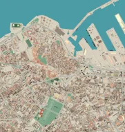
Casablanca — centre-ville
De la médina à l’Atlantique
Casablanca city center — From the medina to the Atlantic
Explorez les cartes du Maroc en 3D, avec des données ouvertes et du relief réel.
Explore Morocco in 3D. Open map data, real elevation, French, English, Arabic and Tamazight.

De la médina à l’Atlantique
Casablanca city center — From the medina to the Atlantic
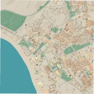
Le centre-ville et le front de mer
Agadir — The city centre and seafront
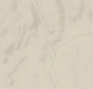
Le village d’Aguerd Oudad et ses reliefs granitiques autour du Chapeau de Napoléon
Aguerd Oudad — Napoleon’s Hat — Aguerd Oudad village and the granite hills around Napoleon’s Hat
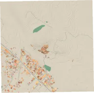
Le ksar et le village voisin
Ait Ben Haddou — The ksar and neighbouring village
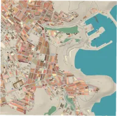
Le centre-ville et les abords du port
Al Hoceima — The city centre and harbour surroundings
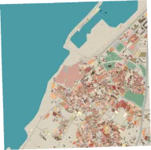
La médina et ses remparts face à l’Atlantique
Asilah — The medina and ramparts facing the Atlantic
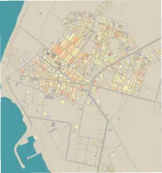
Le cap, le phare et les quartiers qui bordent l’Atlantique
Boujdour — The cape, lighthouse and neighbourhoods beside the Atlantic
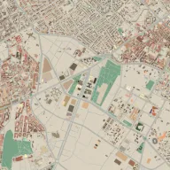
Le quartier d’affaires et Anfa Park
Casablanca Finance City — The business district and Anfa Park
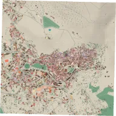
La médina du Rif
Chefchaouen — The Rif medina
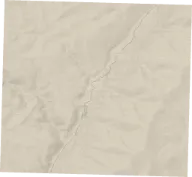
Les lacets du Dadès, le canyon et les villages du corridor de l’oued
Dadès Gorge — Dadès switchbacks, canyon slopes and villages along the river corridor
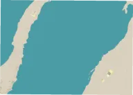
La ville, la lagune et la Dune Blanche dans une carte continue ; géométrie à 4 m, relief à 30 m et imagerie à 10 m
Dakhla — The city, lagoon and White Dune in one continuous map; 4 m geometry, 30 m terrain and 10 m imagery
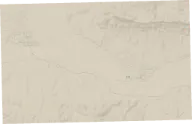
La palmeraie d’Agdz, le cours du Drâa et les ksour autour de Tamnougalt
Drâa Valley — Agdz and Tamnougalt — The Agdz palm grove, Drâa river corridor and ksour around Tamnougalt
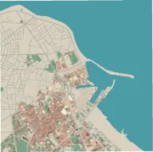
La cité portugaise et le littoral
El Jadida — The Portuguese city and coast
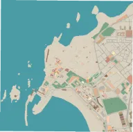
La médina, les remparts et le port
Essaouira — The medina, ramparts and harbour
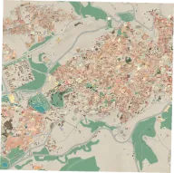
Fès el-Bali et les abords de la médina
Fez — Fes el-Bali and the medina surroundings
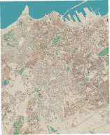
Une carte continue du centre, des Roches Noires, de CFC et de Sidi Maarouf
Greater Casablanca — One continuous map of the centre, Roches Noires, CFC and Sidi Maarouf
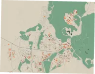
Le centre d’Ifrane, le campus Al Akhawayn et son centre de conférences
Ifrane — Central Ifrane, the Al Akhawayn campus and its conference centre
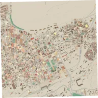
Le centre-ville au sud du Sebou
Kenitra — The city centre south of the Sebou
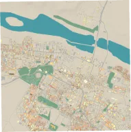
Le tissu urbain, les places et la cathédrale Saint-François-d’Assise
Laayoune — Urban streets, squares and Saint Francis of Assisi Cathedral
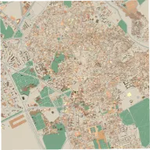
Jemaa el-Fna et la médina
Marrakech — Jemaa el-Fna and the medina
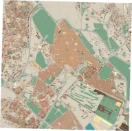
Bab Mansour et la ville impériale
Meknes — Bab Mansour and the imperial city
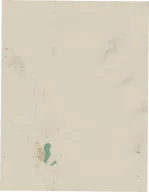
Merzouga et les dunes de l’Erg Chebbi, dont la dune étoilée Lala Lallia
Merzouga — Erg Chebbi — Merzouga and the Erg Chebbi dunes, including the Lala Lallia star dune
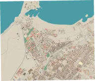
Le centre, la kasbah, les parcs et le front de mer
Mohammedia — The centre, kasbah, parks and seafront
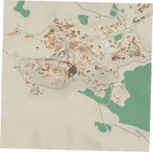
La ville historique
Moulay Idriss Zerhoun — The historic town
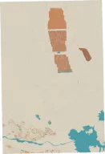
La kasbah de Taourirt, Ouarzazate et le complexe solaire Noor au nord de la ville
Ouarzazate — Noor solar complex — Taourirt Kasbah, Ouarzazate and the Noor solar complex north of the city
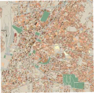
La médina et le centre-ville
Oujda — The medina and city centre
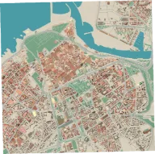
La médina, les Oudayas et la tour Hassan
Rabat — The medina, Oudayas and Hassan Tower
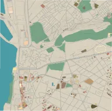
La médina et le front de mer
Safi — The medina and waterfront
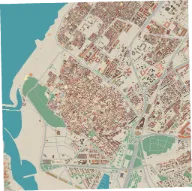
La médina au bord du Bouregreg
Salé — The medina beside the Bouregreg
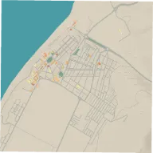
Le centre-ville et le littoral
Sidi Ifni — The city centre and coast
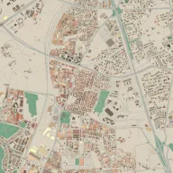
Le quartier de Sidi Maârouf et ses environs
Casablanca Sidi Maarouf — Sidi Maârouf and its surroundings
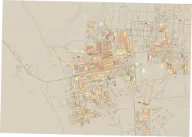
La zaouïa de Cheikh Ma El Aïnin et les rues de la ville
Smara — The Zaouia of Cheikh Ma El Ainin and surrounding town streets
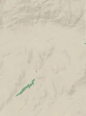
Tafraoute, les reliefs granitiques d’Aguerd Oudad et les villages de la vallée des Ameln
Tafraoute — Ameln Valley — Tafraoute, the Aguerd Oudad granite hills and villages of the Ameln Valley
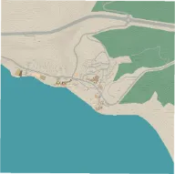
Le village côtier et ses rues
Taghazout — The coastal village and its streets
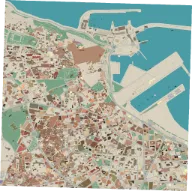
La médina et le front de mer
Tangier — The medina and waterfront
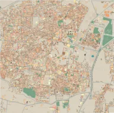
La ville ancienne à l’intérieur des remparts
Taroudant — The old town inside its ramparts
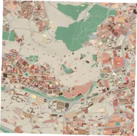
La médina
Tetouan — The medina
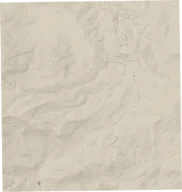
Le col de Tizi n’Tichka, les lacets de la N9 et les vallons du Haut Atlas
High Atlas — Tizi n’Tichka — Tizi n’Tichka Pass, the winding N9 and surrounding High Atlas valleys
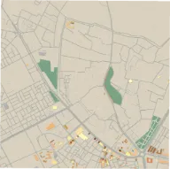
La médina et ses remparts
Tiznit — The medina and its ramparts
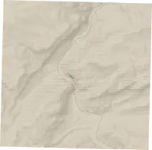
Le défilé du Todra, ses versants calcaires et le ruban de vallée en amont de Tinghir
Todra Gorge — The Todra narrows, limestone slopes and river valley upstream of Tinghir
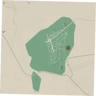
Le site archéologique selon les objets cartographiés
Volubilis — The archaeological site as mapped; no reconstructed ruins
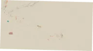
Zagora, sa montagne et la vallée du Drâa jusqu’aux dunes de Tinfou
Zagora — Tinfou dunes — Zagora, its mountain and the Drâa Valley extending to the Tinfou dunes